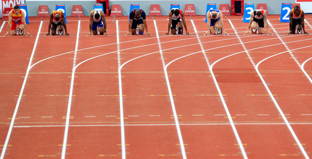

Conocimientos previos
Combinaciones
Se llaman combinaciones de n objetos de orden k a los distintos grupos que se pueden formar al escoger secuencialmente k objetos de entre n posibles, de modo cada una de las combinaciones es distinta de las demás, si difiere en uno de sus objetos por lo menos, sin importar el orden. Notación: Cn,k
Para calcular el número de combinaciones de k objetos que se pueden formar con los n objetos disponibles, se considera que, por cada combinación de k objetos, existen k! ordenaciones equivalentes de k objetos; en efecto, cada combinación de k objetos se puede permutar de k! maneras diferentes, generando k! variaciones. De modo que basta con dividir el número de variaciones de n objetos de orden k, entre las permutaciones de k objetos para obtener las combinaciones de n objetos de orden k, es decir:
Ejemplo 1
un grupo de 12 trabajadoresnecesitan formar una comisión de 3 personas para hablar con su jefe, ¿Cuántos grupos diferentes de personas se pueden seleccionar para dicha tarea?
Debemos elegir grupos de 3 de entre los 12, no influye el orden por lo que estamos frente a una combinación.
Por lo que podemos formar 220 grupos distintos para hablar con el jefe.
BARAJA INGLESA
¿Cuántas manos diferentes le pueden tocar a un jugador de poker?
Carrera
En una prueba de atletismo en la que participan 8 atletas se pueden clasificar sólo 3 para la final. ¿Cuantos grupos distintos de finalistas se pueden formar?

Obra publicada con Licencia Creative Commons Reconocimiento Compartir igual 4.0